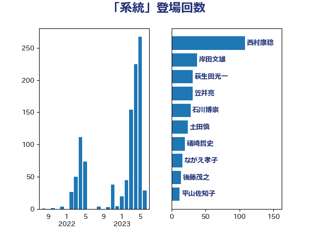

単語「系統」

| 西村康稔 | 自由民主党 | 108 回 |
| 岸田文雄 | 自由民主党 | 38 回 |
| 萩生田光一 | 自由民主党 | 31 回 |
| 笠井亮 | 日本共産党 | 31 回 |
| 石川博崇 | 公明党 | 28 回 |
| 土田慎 | 自由民主党 | 24 回 |
| 礒崎哲史 | 国民民主党 | 20 回 |
| ながえ孝子 | 無所属 | 16 回 |
| 後藤茂之 | 自由民主党 | 14 回 |
| 平山佐知子 | 無所属 | 12 回 |
| 小野泰輔 | 日本維新の会 | 12 回 |
| 小山展弘 | 立憲民主党 | 11 回 |
| 鈴木義弘 | 国民民主党 | 10 回 |
| 猪瀬直樹 | 日本維新の会 | 10 回 |
| 山岡達丸 | 立憲民主党 | 9 回 |
| 赤嶺政賢 | 日本共産党 | 8 回 |
| 浜田靖一 | 自由民主党 | 8 回 |
| 山崎誠 | 立憲民主党 | 8 回 |
| 小林一大 | 自由民主党 | 8 回 |
| 緒方林太郎 | 無所属 | 7 回 |
| 水野素子 | 立憲民主党 | 7 回 |
| 松本尚 | 自由民主党 | 7 回 |
| 杉尾秀哉 | 立憲民主党 | 7 回 |
| 浅野哲 | 国民民主党 | 6 回 |
| 宮本岳志 | 日本共産党 | 6 回 |
| 太栄志 | 立憲民主党 | 6 回 |
| 吉良州司 | 無所属 | 6 回 |
| 篠原豪 | 立憲民主党 | 5 回 |
| 空本誠喜 | 日本維新の会 | 5 回 |
| 穀田恵二 | 日本共産党 | 5 回 |
| 國場幸之助 | 自由民主党 | 5 回 |
| 高木かおり | 日本維新の会 | 4 回 |
| 羽田次郎 | 立憲民主党 | 4 回 |
| 田島麻衣子 | 立憲民主党 | 4 回 |
| 岩田和親 | 自由民主党 | 4 回 |
| 宮本徹 | 日本共産党 | 4 回 |
| 中川宏昌 | 公明党 | 4 回 |
| 野間健 | 立憲民主党 | 3 回 |
| 藤井比早之 | 自由民主党 | 3 回 |
| 落合貴之 | 立憲民主党 | 3 回 |
| 茂木敏充 | 自由民主党 | 3 回 |
| 若松謙維 | 公明党 | 3 回 |
| 田中健 | 国民民主党 | 3 回 |
| 浦野靖人 | 日本維新の会 | 3 回 |
| 森本真治 | 立憲民主党 | 3 回 |
| 打越さく良 | 立憲民主党 | 3 回 |
| 志位和夫 | 日本共産党 | 3 回 |
| 平木大作 | 公明党 | 3 回 |
| 小沼巧 | 立憲民主党 | 3 回 |
| 務台俊介 | 自由民主党 | 3 回 |
| 佐藤正久 | 自由民主党 | 3 回 |
| 中野洋昌 | 公明党 | 3 回 |
| 上月良祐 | 自由民主党 | 3 回 |
| 長浜博行 | 無所属 | 2 回 |
| 鈴木敦 | 国民民主党 | 2 回 |
| 金城泰邦 | 公明党 | 2 回 |
| 里見隆治 | 公明党 | 2 回 |
| 輿水恵一 | 公明党 | 2 回 |
| 西村明宏 | 自由民主党 | 2 回 |
| 若林健太 | 自由民主党 | 2 回 |
| 美延映夫 | 日本維新の会 | 2 回 |
| 紙智子 | 日本共産党 | 2 回 |
| 磯崎仁彦 | 自由民主党 | 2 回 |
| 田村貴昭 | 日本共産党 | 2 回 |
| 田嶋要 | 立憲民主党 | 2 回 |
| 河野義博 | 公明党 | 2 回 |
| 池下卓 | 日本維新の会 | 2 回 |
| 本庄知史 | 立憲民主党 | 2 回 |
| 末次精一 | 立憲民主党 | 2 回 |
| 新妻秀規 | 公明党 | 2 回 |
| 市村浩一郎 | 日本維新の会 | 2 回 |
| 岩谷良平 | 日本維新の会 | 2 回 |
| 山下芳生 | 日本共産党 | 2 回 |
| 小西洋之 | 立憲民主党 | 2 回 |
| 小林鷹之 | 自由民主党 | 2 回 |
| 宮路拓馬 | 自由民主党 | 2 回 |
| 宮口治子 | 立憲民主党 | 2 回 |
| 守島正 | 日本維新の会 | 2 回 |
| 太田房江 | 自由民主党 | 2 回 |
| 堀場幸子 | 日本維新の会 | 2 回 |
| 国定勇人 | 自由民主党 | 2 回 |
| 古川俊治 | 自由民主党 | 2 回 |
| 加藤勝信 | 自由民主党 | 2 回 |
| 佐藤英道 | 公明党 | 2 回 |
| 佐藤啓 | 自由民主党 | 2 回 |
| 上田清司 | 国民民主党 | 2 回 |
| 三浦信祐 | 公明党 | 2 回 |
| 鬼木誠 | 立憲民主党 | 1 回 |
| 高木啓 | 自由民主党 | 1 回 |
| 馬場雄基 | 立憲民主党 | 1 回 |
| 阿部知子 | 立憲民主党 | 1 回 |
| 阿達雅志 | 自由民主党 | 1 回 |
| 鈴木庸介 | 立憲民主党 | 1 回 |
| 鈴木宗男 | 日本維新の会 | 1 回 |
| 金村龍那 | 日本維新の会 | 1 回 |
| 金子恭之 | 自由民主党 | 1 回 |
| 野田国義 | 立憲民主党 | 1 回 |
| 野村哲郎 | 自由民主党 | 1 回 |
| 遠藤良太 | 日本維新の会 | 1 回 |
| 近藤昭一 | 立憲民主党 | 1 回 |
| 赤羽一嘉 | 公明党 | 1 回 |
| 藤田文武 | 日本維新の会 | 1 回 |
| 舞立昇治 | 自由民主党 | 1 回 |
| 細田健一 | 自由民主党 | 1 回 |
| 篠原孝 | 立憲民主党 | 1 回 |
| 竹詰仁 | 国民民主党 | 1 回 |
| 石橋通宏 | 立憲民主党 | 1 回 |
| 石川香織 | 立憲民主党 | 1 回 |
| 石垣のりこ | 立憲民主党 | 1 回 |
| 石井正弘 | 自由民主党 | 1 回 |
| 石井啓一 | 公明党 | 1 回 |
| 田畑裕明 | 自由民主党 | 1 回 |
| 田村智子 | 日本共産党 | 1 回 |
| 田村憲久 | 自由民主党 | 1 回 |
| 田名部匡代 | 立憲民主党 | 1 回 |
| 熊谷裕人 | 立憲民主党 | 1 回 |
| 滝波宏文 | 自由民主党 | 1 回 |
| 浜野喜史 | 国民民主党 | 1 回 |
| 泉健太 | 立憲民主党 | 1 回 |
| 柴田巧 | 日本維新の会 | 1 回 |
| 柳ヶ瀬裕文 | 日本維新の会 | 1 回 |
| 松本剛明 | 自由民主党 | 1 回 |
| 東国幹 | 自由民主党 | 1 回 |
| 杉久武 | 公明党 | 1 回 |
| 末松義規 | 立憲民主党 | 1 回 |
| 早稲田ゆき | 立憲民主党 | 1 回 |
| 日下正喜 | 公明党 | 1 回 |
| 庄子賢一 | 公明党 | 1 回 |
| 岡田直樹 | 自由民主党 | 1 回 |
| 山際大志郎 | 自由民主党 | 1 回 |
| 山添拓 | 日本共産党 | 1 回 |
| 山本香苗 | 公明党 | 1 回 |
| 山口壯 | 自由民主党 | 1 回 |
| 宮崎政久 | 自由民主党 | 1 回 |
| 天畠大輔 | れいわ新選組 | 1 回 |
| 大野泰正 | 自由民主党 | 1 回 |
| 坂本祐之輔 | 立憲民主党 | 1 回 |
| 吉田とも代 | 日本維新の会 | 1 回 |
| 吉川赳 | 無所属 | 1 回 |
| 吉川沙織 | 立憲民主党 | 1 回 |
| 友納理緒 | 自由民主党 | 1 回 |
| 北村経夫 | 自由民主党 | 1 回 |
| 加藤鮎子 | 自由民主党 | 1 回 |
| 八木哲也 | 自由民主党 | 1 回 |
| 倉林明子 | 日本共産党 | 1 回 |
| 伴野豊 | 立憲民主党 | 1 回 |
| 伊藤孝恵 | 国民民主党 | 1 回 |
| 伊波洋一 | 無所属 | 1 回 |
| 井野俊郎 | 自由民主党 | 1 回 |
| 井坂信彦 | 立憲民主党 | 1 回 |
| 三木圭恵 | 日本維新の会 | 1 回 |